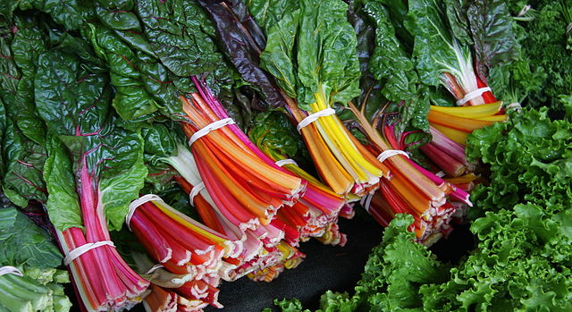
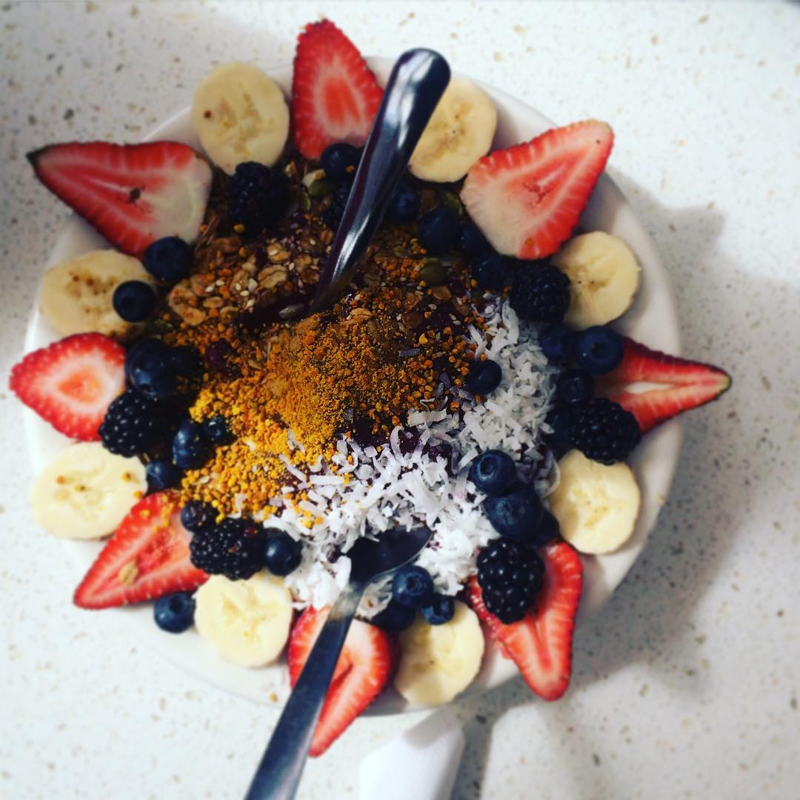

NYC Food Trends of 2017
| 5 | Ice Cream revolution |
|
Ice cream has always been a craze but now, we're seeing it being served in more creative ways than ever seen before! From elaborately crafted (and messy) freakshakes made popular in Australia to the Thai-style ice-cream rolls and even ice cream stuffed doughnuts, the ice cream revolution is sure to hit NYC in full force in 2017. Another reason to look forward to the summer! | 4 | Move over Kale! |
| 
Kale's glory days might actually be over. The once popular superfood is being shoved aside for beet greens, chard, turnip greens, mustard greens, seaweed and carrot tops. These healthy and nutritious vegetables are quickly becoming the go-to healthy option. So it's not "good-bye forever" for kale, but the once popular leafy green will be sharing it's crown with a new crew of vegetables. | |
| 3 | Bowls! |
| 
Bowls have been creeping their way into popularity but are sure to be a force of nature in 2017. From acai bowls to poke bowls, restaurants have been embracing this bowl trend with open arms as this allows for more creative recipes. Preparing ingredients separately then combining them into a bowl have resulted in versatile meals for breakfast, lunch, dinner and even dessert. 2017 is sure to bring out endless bowl recipes that I'm sure our taste buds will appreciate. | |
| 2 | Vegetarian Comfort food |

With the growing health conscious food trend, it's no surprise that vegetables are making another appearance on this list. Restaurants focused solely around vegetarian dishes have increased in popularity especially as they introduce a plethora of savory plant-based protein dishes that are sure to make a carnivore make the switch to the veggie side (not quite). | |
| 1 | Brunchfast |

"Brunchfast" is the new term coined to describe the new breakfast trend with a spicier and crunchier twist that's making its mark in NYC. These meals are not the typical smooth oatmeal, scramble eggs or pancake dish, but much more on the heavier side. Breakfast dishes like fried chicken breakfast sandwiches, crispy chorizo and chimichurri are being served as popular breakfast options at several fast food restaurants. Brunchfast will make us look forward to weekend breakfasts more so than ever. |
Is there anything you feel we've missed? Leave your comment below.